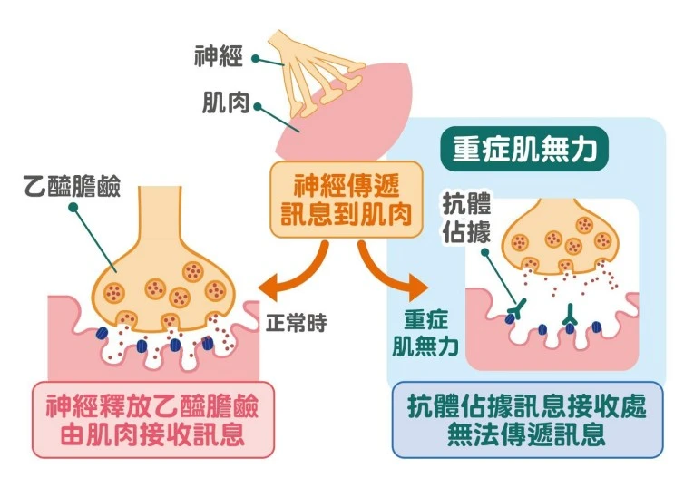
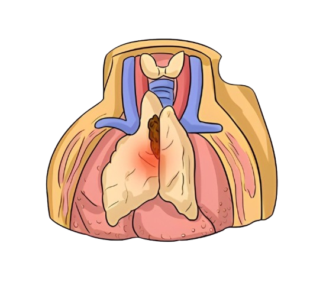
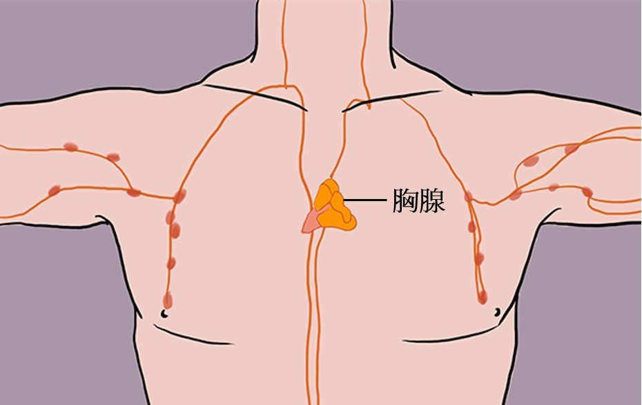
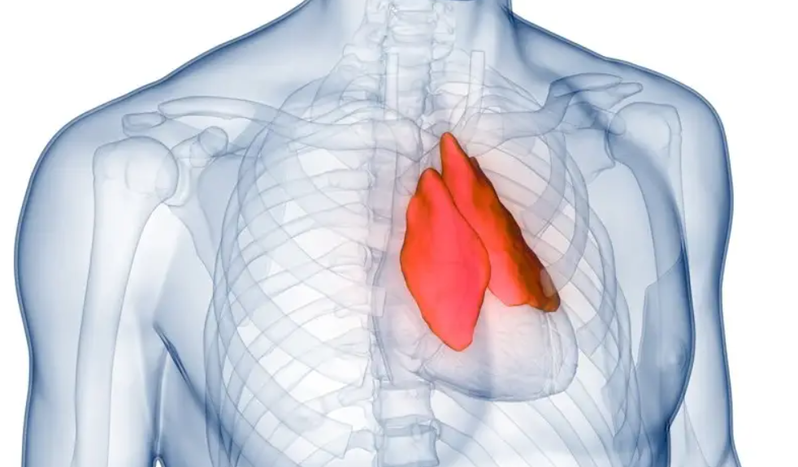
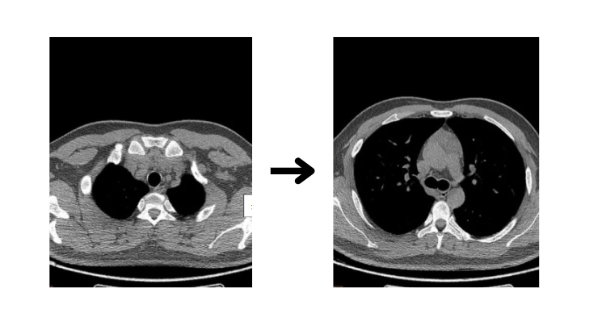

介紹
是位於胸腔中的一個小型腺體，位於心臟上方，對免疫系統發展具有關鍵作用。胸腺的主要功能是幫助產生T細胞（也稱為T淋巴細胞），這些細胞對抗病毒、細菌及其他外來物質。
重症肌無力（Myasthenia Gravis, MG）
-
是一種自體免疫性疾病，會影響神經與肌肉之間的信號傳遞，導致肌肉無力。這種疾病與胸腺異常有關，許多患者會有胸腺腫大或胸腺異位現象。
-
病因:
1.自體免疫反應：患者的免疫系統錯誤地攻擊與神經-肌肉連接處的受體，導致肌肉無力。 2.胸腺異常：許多MG患者的胸腺會增生或發生腫瘤（如胸腺瘤），這可能與免疫系統的異常有關。
- 症狀：
1.肌肉無力，尤其是在活動後加重 2.眼瞼下垂 3.雙眼視力模糊 4.吞嚥困難或說話不清 5.呼吸困難（在病情加重時）- 預防：
1.早期診斷與治療：及時就醫，尤其是在有家族史的情況下，可以早期檢查是否存在免疫系統異常。 2.避免感染：感染可能加重MG症狀，保持良好的衛生習慣，及時治療各類感染。- 治療：
1.藥物治療：如抗膽鹼酯酶藥物（如新斯的明）幫助改善神經肌肉傳導。 2.免疫抑制劑：如類固醇、環孢素等藥物，減少免疫系統的攻擊。 3.胸腺切除手術：對於有胸腺瘤或胸腺過度增生的患者，胸腺切除可能有助於改善病情。 4.免疫療法：如血漿置換療法或靜脈注射免疫球蛋白（IVIG）。胸腺瘤（Thymoma）
-
是胸腺中發生的腫瘤，通常是良性，但也有部分可能是惡性。它是胸腺常見的腫瘤之一，並且與重症肌無力有一定的關聯。
- 病因:
1.遺傳因素：某些基因突變可能增加患胸腺瘤的風險。 2.自體免疫疾病：如重症肌無力，胸腺瘤的發生率較高。
- 症狀:
1.無症狀者較多，有些人發現胸腺瘤時無明顯不適。 2.胸部疼痛或不適 3.咳嗽、呼吸急促 4.可能伴隨重症肌無力或其他自體免疫疾病的症狀
- 預防：
1.早期檢查：對於重症肌無力等相關疾病的患者，定期檢查胸腺是否異常。 2.避免已知的風險因素：例如避免過度暴露於某些致癌物質。
- 治療:
1.手術切除：對於可手術切除的胸腺瘤，手術是主要治療方法。 2.放療：對於惡性胸腺瘤，可能需要進行放射治療。 3.化療：如果胸腺瘤是惡性且已經擴散，可能需要化療。
胸腺異位（Thymic Ectopia）
-
指胸腺組織位於胸腔之外的異常位置，常見於先天性疾病。胸腺異位可能導致免疫功能異常或發生腫瘤。
- 病因:
1.先天性異常：胸腺在胎兒發育過程中可能未能正常下降或形成。 2.與遺傳相關的疾病：如迪喬治綜合症（DiGeorge Syndrome）等，這些疾病可能會導致胸腺異位。
- 症狀:
1.無症狀者居多，通常在其他疾病或檢查過程中被發現。 2.可能引起免疫功能低下，增加感染風險。 3.部分患者可伴隨心臟、腎臟或顏面等其他先天性異常。
- 預防：
1.早期遺傳檢查：對於有家族史的嬰兒，可以進行基因篩查，及早發現可能的胸腺發育異常。 2.注意免疫系統功能：定期檢查免疫系統功能，以便及早發現可能的免疫缺陷。
- 治療：
1.手術治療：對於一些胸腺異位的患者，可能需要手術將異位的胸腺組織移除。 2.免疫治療：如果伴隨免疫缺陷，可能需要進行免疫補充治療或其他免疫增強方法。
胸腺炎（Thymitis）
-
是胸腺的炎症，可能由於感染、免疫反應或自體免疫疾病引起。這種情況可能影響胸腺的功能，進而影響免疫系統。
-
病因:
1.病毒感染：如腺病毒、流感病毒等。 2.自體免疫反應：免疫系統攻擊胸腺，導致炎症。 3.細菌感染：雖然較為少見，但細菌感染也可能引起胸腺炎。
- 症狀：
1.胸部疼痛或壓迫感 2.發燒、寒顫 3.噁心、食慾不振 4.呼吸困難（在嚴重情況下）- 預防：
1.保持良好的衛生習慣：減少感染風險，尤其是避免與病源接觸。 2.及時接種疫苗：接種流感疫苗等預防病毒感染。 3.控制自體免疫性疾病：如有自體免疫疾病，應積極控制，避免引發胸腺炎。- 治療：
1.抗病毒藥物：針對病毒引起的胸腺炎，使用相應的抗病毒藥物。 2.抗生素：若是由細菌感染引起，則需使用抗生素。 3.免疫抑制劑：對於自體免疫引起的胸腺炎，可能需要使用免疫抑制劑來減少免疫反應。胸腺增生（Thymic Hyperplasia）
-
指胸腺的異常增大，通常是由免疫系統的異常反應或其他疾病引起。胸腺增生本身通常不會直接引起症狀，但可能與其他免疫疾病有關。
- 病因:
1.自體免疫疾病：如重症肌無力、紅斑性狼瘡等。 2.感染：某些病毒感染可能引起胸腺腺體的增生。
- 症狀:
1.胸部不適或疼痛 2.可能無明顯症狀，通常是在其他檢查中發現 3.在某些情況下，增生的胸腺可能壓迫鄰近結構，如氣管或心臟，導致呼吸困難或心悸。
- 預防：
1.控制免疫疾病：對於有免疫系統異常的患者，應控制基礎疾病，減少胸腺增生的風險。 2.及早檢查：對於高風險人群進行定期的胸腺檢查，及早發現異常。
- 治療：
1.藥物治療：使用免疫抑制劑控制自體免疫疾病。 2.手術切除：對於嚴重的胸腺增生，可能需要進行胸腺切除手術。
- 症狀：
- 症狀：